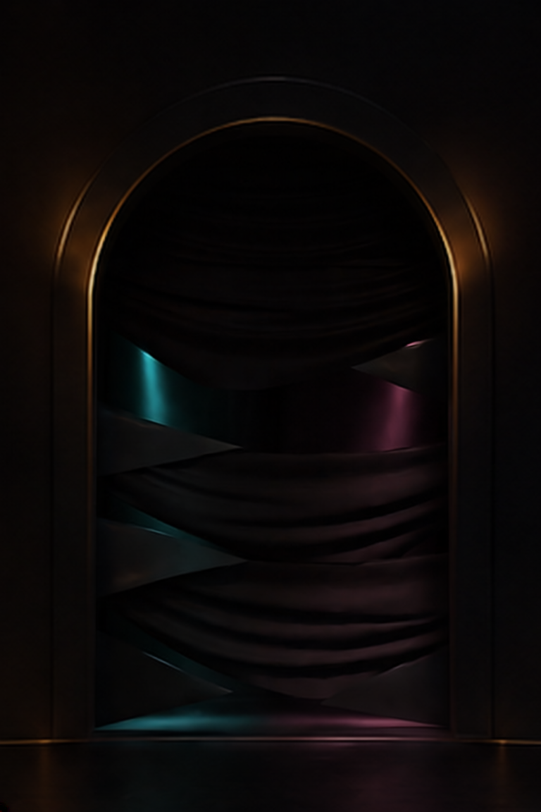

Crop 02 is not adopted. Vertical folds replace the wrapping bands, but stepped hems and paired lower color pools do not yet establish the intended passage between staggered curtains. No full-size composite exists.

These are unchanged source PNGs; CSS fit scaling is for review only. Reference 17, Boundary 01 and all production files remain unchanged. No raw-output pixel-lock or native-app validation is claimed.
Next proposed construction: two full-length panels at different depths, leaving one off-center gap. No automatic reroll.